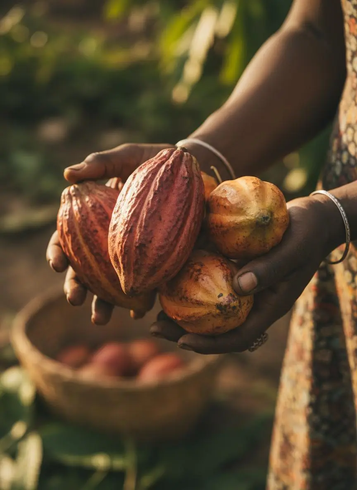
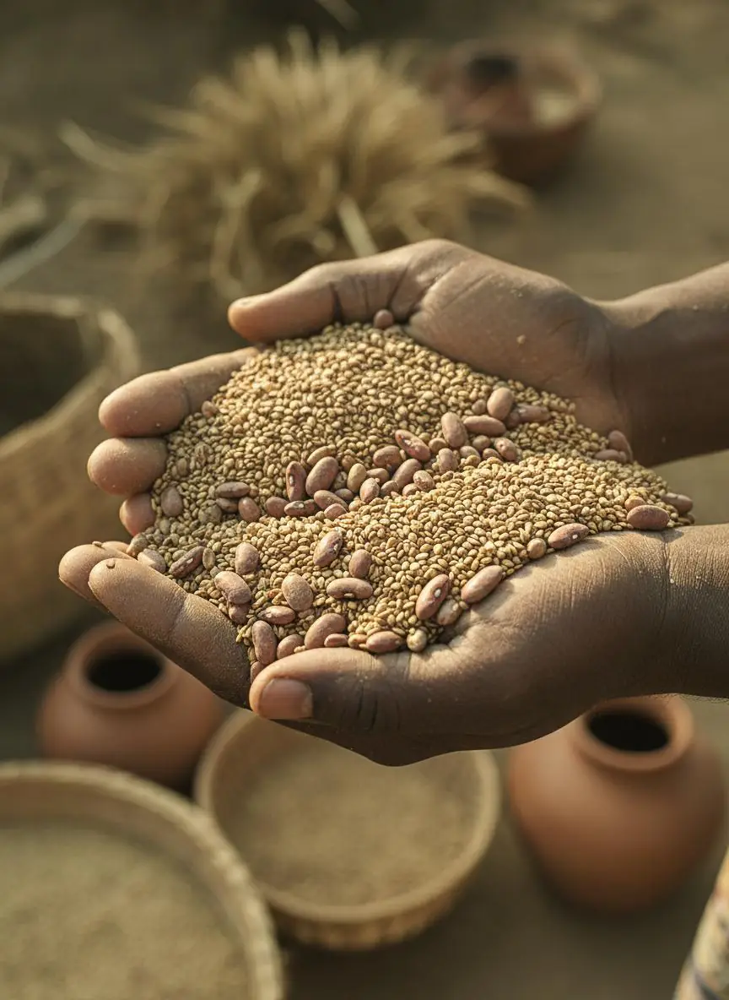

In the field
Farming, Up Close
The work behind every harvest.



Cultivation and farming practice across Taraba State: the agricultural base that supplies the rest of the Misalta group.
For: Landowners, cooperatives, offtakers and input suppliers
Cocoa and grains grown across Taraba State, with room to grow as the group expands.
Modern cultivation techniques and careful post-harvest handling, from planting to harvest.
Harvests feed Misalta Agro Processing, where cocoa becomes butter and powder.
Produce moves to buyers and across borders through Misalta Logistics and Misalta Trade X.
Writing on cultivation practice, post-harvest handling and market access, published in our newsroom.
Read farming updatesThe work behind every harvest.


Pick the description that fits you. Each one leads straight to the right next step.
Use the form below, email us or message us on WhatsApp. A few lines is enough.
The Misalta Farms team reads every enquiry and comes back to you directly.
Land, supply, offtake or input terms that suit you and the farm.
Our cultivation is in Taraba State, in Nigeria's North East, alongside the group's processing sites and proposed agro hubs.
Misalta Farms is overseen by the Misalta Global board and key directors, with financial, agricultural and legal advisers, the same leadership behind every business in the group.
Tell us whether you have land, produce, inputs or an offtake requirement, and the farms team will come back to you.